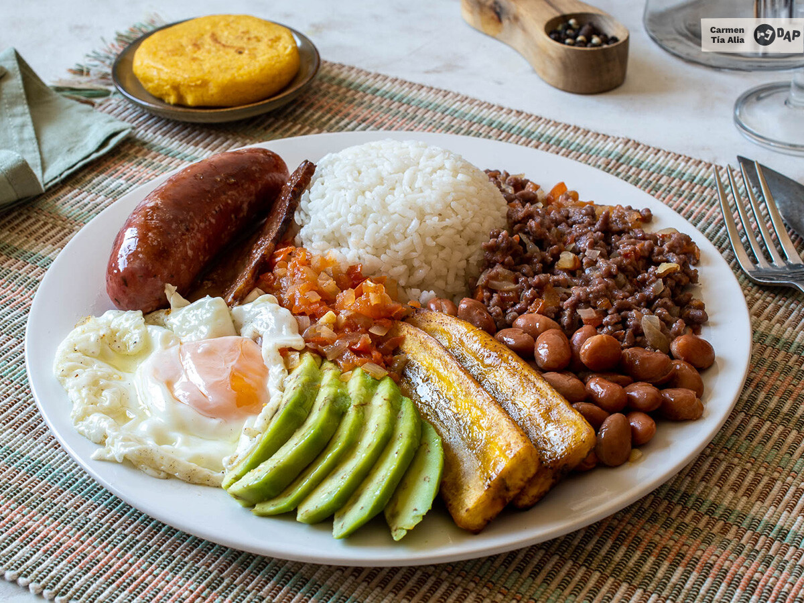

Bandeja Paisa

Description
Bandeja Paisa is Colombia's national dish, a hearty platter that originated in the Antioquia region.
This filling combination of beans, rice, meats, and other ingredients represents the rich culinary heritage of Colombia.
Ingredients
- Red beans
- White rice
- Ground beef
- Chicharrón (fried pork belly)
- Colombian chorizo
- Fried egg
- Plantains
- Avocado
- Arepa
- Hogao sauce
Steps
- Cook the red beans until tender
- Prepare white rice
- Cook ground beef with seasonings
- Fry the chicharrón until crispy
- Grill the chorizo
- Fry the eggs sunny-side up
- Fry plantains until golden
- Prepare hogao sauce
- Warm arepas
- Assemble all components on a large plate
- Serve with sliced avocado and hogao sauce
Return to main page